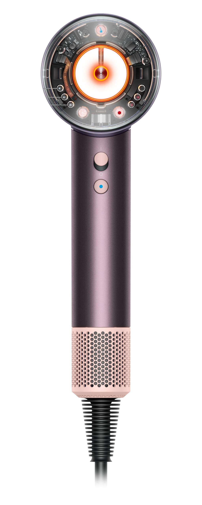
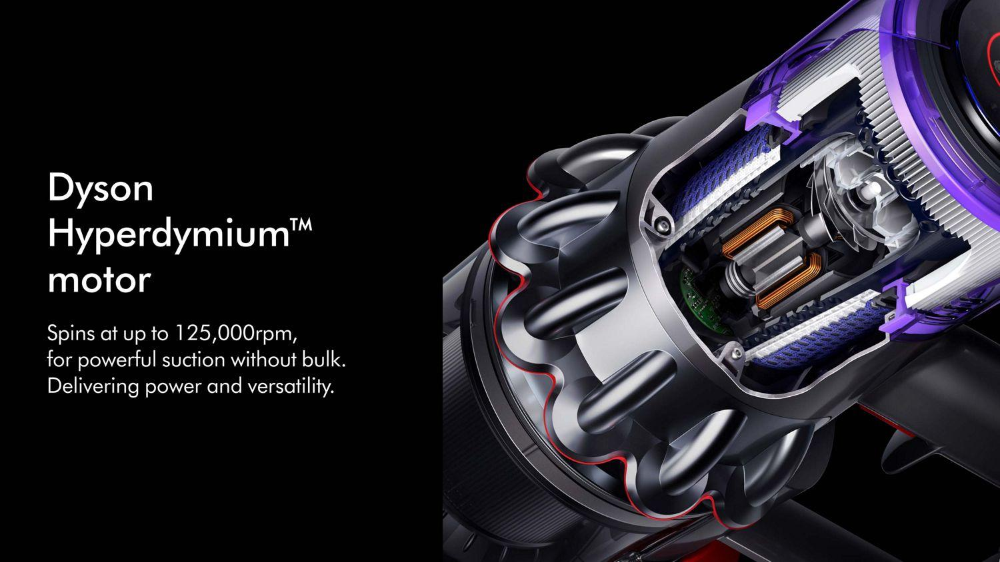
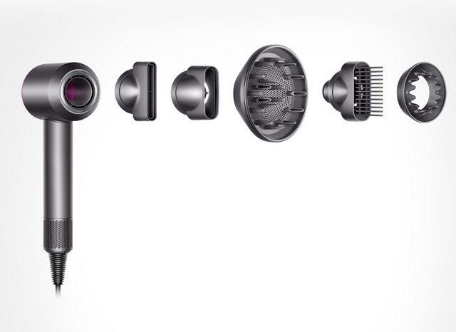
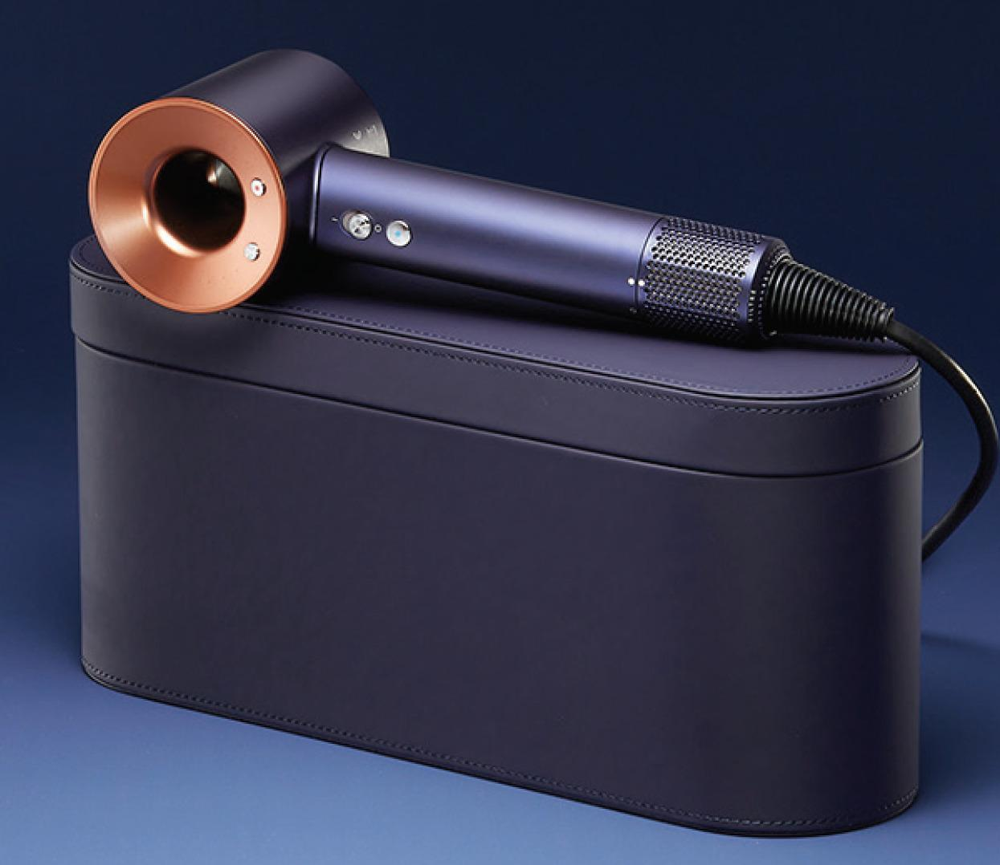

Инженеры Dyson создали фен, который сочетает мощность, защиту волос и современный дизайн.

Датчики измеряют температуру более 40 раз в секунду. Это помогает избежать перегрева волос и сохранить их естественный блеск.

Компактный цифровой двигатель вращается до 110 000 оборотов в минуту и обеспечивает мощный поток воздуха для быстрой сушки.

Все насадки крепятся с помощью магнитов и легко поворачиваются во время использования.

Двигатель расположен в рукоятке, благодаря чему фен отлично сбалансирован и удобен даже при длительном использовании.
Dyson Supersonic™ создан для быстрой и безопасной укладки волос.